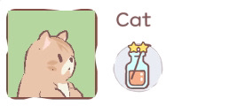

| image | information | ability |
|---|---|---|
|
Breed: abyssinian |
Wheat becomes more effective in recipes that include it |
|
|
Breed: american bobtail |
Lemon becomes more effective in recipes that include it |
|
|  |
Breed: exotic shorthair |
Juice is more well mixed with higher prices |
|
Breed: laperm |
Ppumpkin becomes more effective in recipes that include it |
|
|
Breed: singapura |
Faster walking speed |
|
| meow meow meow | secret message! |